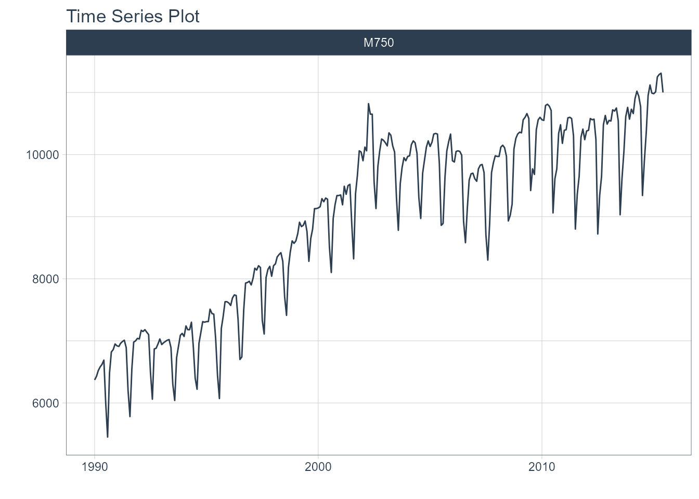
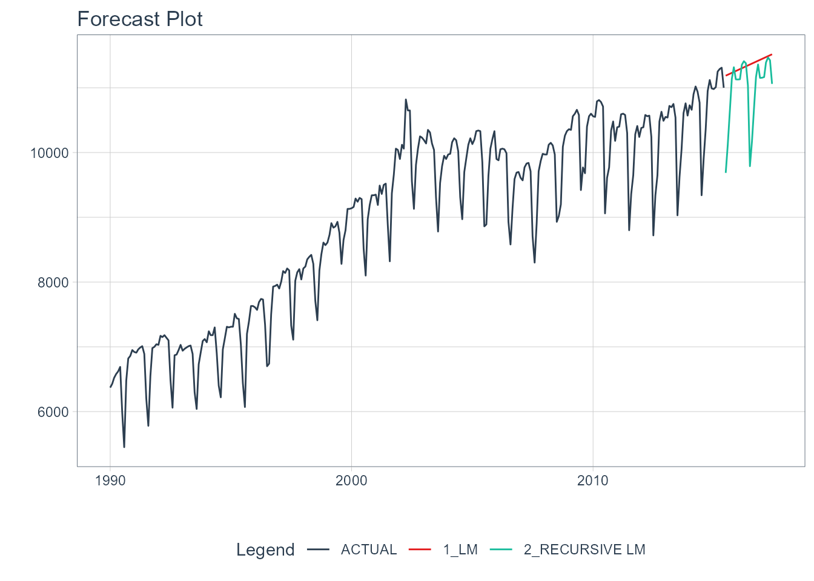
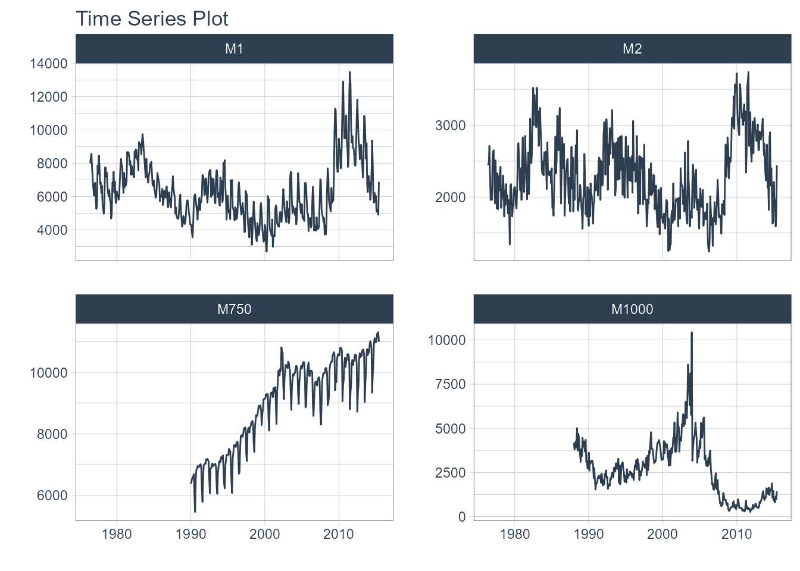
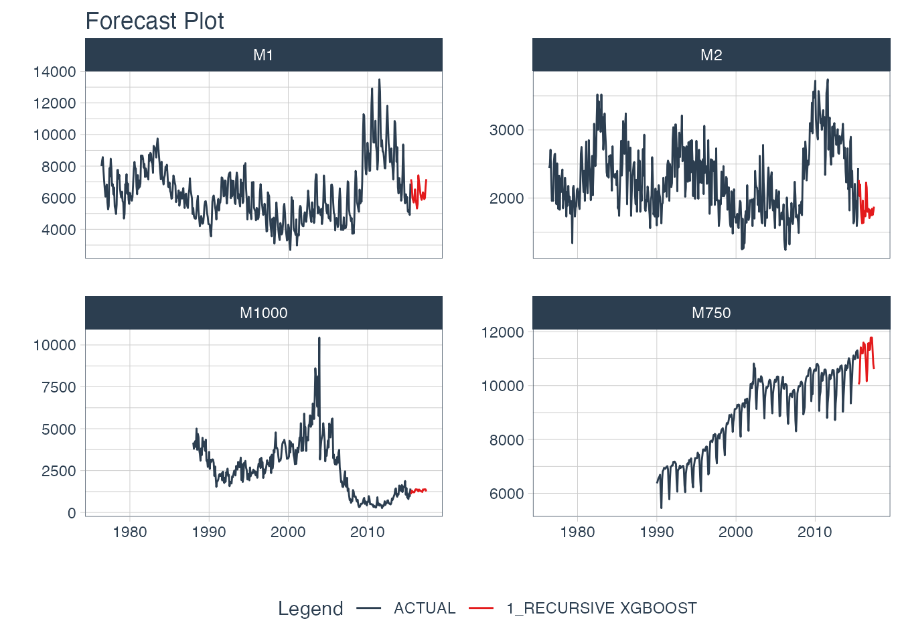

Autoregressive Forecasting with Recursive
Source:vignettes/recursive-forecasting.Rmd
recursive-forecasting.RmdTurn any
tidymodelinto an Autoregressive Forecasting Model
This short tutorial shows how you can use recursive() to:
Make a Recursive Forecast Model for forecasting with short-term lags (i.e. Lag Size < Forecast Horizon).
Perform Recursive Panel Forecasting, which is when you have a single autoregressive model that predicts forecasts for multiple time series.

Recursive Panel Forecast with XGBoost
Forecasting with Recursive Ensembles
We have a separate modeltime.ensemble package that includes support for recursive(). Making recursive ensembles is covered in the “Forecasting with Recursive Ensembles” article.
What is a Recursive Model?
A recursive model uses predictions to generate new values for independent features. These features are typically lags used in autoregressive models.
Why is Recursive needed for Autoregressive Models?
It’s important to understand that a recursive model is only needed when using lagged features with a Lag Size < Forecast Horizon. When the lag length is less than the forecast horizon, a problem exists were missing values (NA) are generated in the future data.
A solution that recursive() implements is to iteratively fill these missing values in with values generated from predictions. This technique can be used for:
Single time series predictions - Effectively turning any
tidymodelsmodel into an Autoregressive (AR) modelPanel time series predictions - In many situations we need to forecast more than one time series. We can batch-process these with 1 model by processing time series groups as panels. This technique can be extended to recursive forecasting for scalable models (1 model that predicts many time series).
Make a Recursive Forecast Model
We’ll start with the simplest example, turning a Linear Regresion into an Autoregressive model.
Data Visualization
Let’s start with the m750 dataset.
m750
#> # A tibble: 306 × 3
#> id date value
#> <fct> <date> <dbl>
#> 1 M750 1990-01-01 6370
#> 2 M750 1990-02-01 6430
#> 3 M750 1990-03-01 6520
#> 4 M750 1990-04-01 6580
#> 5 M750 1990-05-01 6620
#> 6 M750 1990-06-01 6690
#> 7 M750 1990-07-01 6000
#> 8 M750 1990-08-01 5450
#> 9 M750 1990-09-01 6480
#> 10 M750 1990-10-01 6820
#> # … with 296 more rowsWe can visualize the data with plot_time_series().
m750 %>%
plot_time_series(
.date_var = date,
.value = value,
.facet_var = id,
.smooth = F,
.interactive = F
)
Data Preparation
Let’s establish a forecast horizon and extend the dataset to create a forecast region.
FORECAST_HORIZON <- 24
m750_extended <- m750 %>%
group_by(id) %>%
future_frame(
.length_out = FORECAST_HORIZON,
.bind_data = TRUE
) %>%
ungroup()Transform Function
We’ll use short-term lags, lags with a size that are smaller than the forecast horizon. Here we create a custom function, lag_roll_transformer() that takes a dataset and adds lags 1 through 12 and a rolling mean using lag 12. Each of the features this function use lags less than our forecast horizon of 24 months, which means we need to use recursive().
lag_roll_transformer <- function(data){
data %>%
tk_augment_lags(value, .lags = 1:FORECAST_HORIZON) %>%
tk_augment_slidify(
contains("lag12"),
.f = ~mean(.x, na.rm = T),
.period = 12,
.partial = TRUE
)
}Apply the Transform Function
When we apply the lag roll transformation to our extended data set, we can see the effect.
m750_rolling <- m750_extended %>%
lag_roll_transformer() %>%
select(-id)
m750_rolling
#> # A tibble: 330 × 27
#> date value value_lag1 value_lag2 value_lag3 value_lag4 value_lag5
#> <date> <dbl> <dbl> <dbl> <dbl> <dbl> <dbl>
#> 1 1990-01-01 6370 NA NA NA NA NA
#> 2 1990-02-01 6430 6370 NA NA NA NA
#> 3 1990-03-01 6520 6430 6370 NA NA NA
#> 4 1990-04-01 6580 6520 6430 6370 NA NA
#> 5 1990-05-01 6620 6580 6520 6430 6370 NA
#> 6 1990-06-01 6690 6620 6580 6520 6430 6370
#> 7 1990-07-01 6000 6690 6620 6580 6520 6430
#> 8 1990-08-01 5450 6000 6690 6620 6580 6520
#> 9 1990-09-01 6480 5450 6000 6690 6620 6580
#> 10 1990-10-01 6820 6480 5450 6000 6690 6620
#> # … with 320 more rows, and 20 more variables: value_lag6 <dbl>,
#> # value_lag7 <dbl>, value_lag8 <dbl>, value_lag9 <dbl>, value_lag10 <dbl>,
#> # value_lag11 <dbl>, value_lag12 <dbl>, value_lag13 <dbl>, value_lag14 <dbl>,
#> # value_lag15 <dbl>, value_lag16 <dbl>, value_lag17 <dbl>, value_lag18 <dbl>,
#> # value_lag19 <dbl>, value_lag20 <dbl>, value_lag21 <dbl>, value_lag22 <dbl>,
#> # value_lag23 <dbl>, value_lag24 <dbl>, value_lag12_roll_12 <dbl>Split into Training and Future Data
The training data needs to be completely filled in. We remove any rows with NA.
train_data <- m750_rolling %>%
drop_na()
train_data
#> # A tibble: 282 × 27
#> date value value_lag1 value_lag2 value_lag3 value_lag4 value_lag5
#> <date> <dbl> <dbl> <dbl> <dbl> <dbl> <dbl>
#> 1 1992-01-01 7030 7040 7000 6980 6550 5780
#> 2 1992-02-01 7170 7030 7040 7000 6980 6550
#> 3 1992-03-01 7150 7170 7030 7040 7000 6980
#> 4 1992-04-01 7180 7150 7170 7030 7040 7000
#> 5 1992-05-01 7140 7180 7150 7170 7030 7040
#> 6 1992-06-01 7100 7140 7180 7150 7170 7030
#> 7 1992-07-01 6490 7100 7140 7180 7150 7170
#> 8 1992-08-01 6060 6490 7100 7140 7180 7150
#> 9 1992-09-01 6870 6060 6490 7100 7140 7180
#> 10 1992-10-01 6880 6870 6060 6490 7100 7140
#> # … with 272 more rows, and 20 more variables: value_lag6 <dbl>,
#> # value_lag7 <dbl>, value_lag8 <dbl>, value_lag9 <dbl>, value_lag10 <dbl>,
#> # value_lag11 <dbl>, value_lag12 <dbl>, value_lag13 <dbl>, value_lag14 <dbl>,
#> # value_lag15 <dbl>, value_lag16 <dbl>, value_lag17 <dbl>, value_lag18 <dbl>,
#> # value_lag19 <dbl>, value_lag20 <dbl>, value_lag21 <dbl>, value_lag22 <dbl>,
#> # value_lag23 <dbl>, value_lag24 <dbl>, value_lag12_roll_12 <dbl>The future data has missing values in the “value” column. We isolate these. Our autoregressive algorithm will predict these. Notice that the lags have missing data, this is OK - and why we are going to use recursive() to fill these missing values in with predictions.
future_data <- m750_rolling %>%
filter(is.na(value))
future_data
#> # A tibble: 24 × 27
#> date value value_lag1 value_lag2 value_lag3 value_lag4 value_lag5
#> <date> <dbl> <dbl> <dbl> <dbl> <dbl> <dbl>
#> 1 2015-07-01 NA 11000 11310 11290 11250 11010
#> 2 2015-08-01 NA NA 11000 11310 11290 11250
#> 3 2015-09-01 NA NA NA 11000 11310 11290
#> 4 2015-10-01 NA NA NA NA 11000 11310
#> 5 2015-11-01 NA NA NA NA NA 11000
#> 6 2015-12-01 NA NA NA NA NA NA
#> 7 2016-01-01 NA NA NA NA NA NA
#> 8 2016-02-01 NA NA NA NA NA NA
#> 9 2016-03-01 NA NA NA NA NA NA
#> 10 2016-04-01 NA NA NA NA NA NA
#> # … with 14 more rows, and 20 more variables: value_lag6 <dbl>,
#> # value_lag7 <dbl>, value_lag8 <dbl>, value_lag9 <dbl>, value_lag10 <dbl>,
#> # value_lag11 <dbl>, value_lag12 <dbl>, value_lag13 <dbl>, value_lag14 <dbl>,
#> # value_lag15 <dbl>, value_lag16 <dbl>, value_lag17 <dbl>, value_lag18 <dbl>,
#> # value_lag19 <dbl>, value_lag20 <dbl>, value_lag21 <dbl>, value_lag22 <dbl>,
#> # value_lag23 <dbl>, value_lag24 <dbl>, value_lag12_roll_12 <dbl>Modeling
We’ll make 2 models for comparison purposes:
- Straight-Line Forecast Model using Linear Regression with the Date feature
- Autoregressive Forecast Model using Linear Regression with the Date feature, Lags 1-12, and Rolling Mean Lag 12
Model 1 (Baseline): Straight-Line Forecast Model
A straight-line forecast is just to illustrate the effect of no autoregressive features. Consider this a NAIVE modeling approach. The only feature that is used as a dependent variable is the “date” column.
model_fit_lm <- linear_reg() %>%
set_engine("lm") %>%
fit(value ~ date, data = train_data)
model_fit_lm
#> parsnip model object
#>
#> Fit time: 4ms
#>
#> Call:
#> stats::lm(formula = value ~ date, data = data)
#>
#> Coefficients:
#> (Intercept) date
#> 3356.7208 0.4712Model 2: Autoregressive Forecast Model
The autoregressive forecast model is simply a parsnip model with one additional step: using recursive(). The key components are:
transform: A transformation function. We use the function previously made that generated Lags 1 to 12 and the Rolling Mean Lag 12 features.-
train_tail: The tail of the training data, which must be as large as the lags used in the transform function (i.e. lag 12).- Train tail can be larger than the lag size used. Notice that we use the Forecast Horizon, which is size 24.
- For Panel Data, we need to include the tail for each group. We have provided a convenient
panel_tail()function.
id(Optional): This is used to identify groups for Recursive Panel Data.
# Autoregressive Forecast
model_fit_lm_recursive <- linear_reg() %>%
set_engine("lm") %>%
fit(value ~ ., data = train_data) %>%
# One additional step - use recursive()
recursive(
transform = lag_roll_transformer,
train_tail = tail(train_data, FORECAST_HORIZON)
)
model_fit_lm_recursive
#> Recursive [parsnip model]
#>
#> parsnip model object
#>
#> Fit time: 4ms
#>
#> Call:
#> stats::lm(formula = value ~ ., data = data)
#>
#> Coefficients:
#> (Intercept) date value_lag1
#> 164.14732 0.00677 0.61244
#> value_lag2 value_lag3 value_lag4
#> 0.18402 -0.07128 0.12089
#> value_lag5 value_lag6 value_lag7
#> -0.01750 0.07095 0.09785
#> value_lag8 value_lag9 value_lag10
#> -0.08053 0.04887 0.03030
#> value_lag11 value_lag12 value_lag13
#> -0.01755 0.73318 -0.52958
#> value_lag14 value_lag15 value_lag16
#> -0.21410 0.07734 -0.13879
#> value_lag17 value_lag18 value_lag19
#> 0.04351 -0.08894 -0.08732
#> value_lag20 value_lag21 value_lag22
#> 0.06641 -0.05737 -0.02331
#> value_lag23 value_lag24 value_lag12_roll_12
#> 0.05754 0.15960 NAModeltime Forecasting Workflow
Once we have our fitted model, we can follow the Modeltime Workflow (note we are skipping calibration and refitting, but this can be performed to get confidence intervals):
First, we add fitted models to a Model Table using modeltime_table(). (Note - If your model description says “LM”, install the development version of modeltime, which has improved model descriptions for recursive models).
model_tbl <- modeltime_table(
model_fit_lm,
model_fit_lm_recursive
)
model_tbl
#> # Modeltime Table
#> # A tibble: 2 × 3
#> .model_id .model .model_desc
#> <int> <list> <chr>
#> 1 1 <fit[+]> LM
#> 2 2 <fit[+]> RECURSIVE LMNext, we perform Forecast Evaluation using modeltime_forecast() and plot_modeltime_forecast().
model_tbl %>%
# Forecast using future data
modeltime_forecast(
new_data = future_data,
actual_data = m750
) %>%
# Visualize the forecast
plot_modeltime_forecast(
.interactive = FALSE,
.conf_interval_show = FALSE
)
We can see the benefit of autoregressive features.
Recursive Forecasting with Panel Models
We can take this further by extending what we’ve learned here to panel data:
Panel Data:
- Grouped transformation functions:
lag_roll_transformer_grouped() -
recursive(): Usingidand thepanel_tail()function
More sophisticated algorithms:
- Instead of using a simple Linear Regression
- We use
xgboostto forecast multiple time series
Data Visualization
Now we have 4 time series that we will forecast.
m4_monthly %>%
plot_time_series(
.date_var = date,
.value = value,
.facet_var = id,
.facet_ncol = 2,
.smooth = F,
.interactive = F
)
Data Preparation
We use timetk::future_frame() to project each series forward by the forecast horizon. This sets up an extended data set with each series extended by 24 time stamps.
FORECAST_HORIZON <- 24
m4_extended <- m4_monthly %>%
group_by(id) %>%
future_frame(
.length_out = FORECAST_HORIZON,
.bind_data = TRUE
) %>%
ungroup()Transform Function
The only difference is that we are applying any lags by group.
lag_roll_transformer_grouped <- function(data){
data %>%
group_by(id) %>%
tk_augment_lags(value, .lags = 1:FORECAST_HORIZON) %>%
tk_augment_slidify(
.value = contains("lag12"),
.f = ~mean(.x, na.rm = T),
.period = c(12),
.partial = TRUE
) %>%
ungroup()
}Apply the Transform Function
We apply the groupwise lag transformation to the extended data set. This adds autoregressive features.
m4_lags <- m4_extended %>%
lag_roll_transformer_grouped()
m4_lags
#> # A tibble: 1,670 × 28
#> id date value value_lag1 value_lag2 value_lag3 value_lag4 value_lag5
#> <fct> <date> <dbl> <dbl> <dbl> <dbl> <dbl> <dbl>
#> 1 M1 1976-06-01 8000 NA NA NA NA NA
#> 2 M1 1976-07-01 8350 8000 NA NA NA NA
#> 3 M1 1976-08-01 8570 8350 8000 NA NA NA
#> 4 M1 1976-09-01 7700 8570 8350 8000 NA NA
#> 5 M1 1976-10-01 7080 7700 8570 8350 8000 NA
#> 6 M1 1976-11-01 6520 7080 7700 8570 8350 8000
#> 7 M1 1976-12-01 6070 6520 7080 7700 8570 8350
#> 8 M1 1977-01-01 6650 6070 6520 7080 7700 8570
#> 9 M1 1977-02-01 6830 6650 6070 6520 7080 7700
#> 10 M1 1977-03-01 5710 6830 6650 6070 6520 7080
#> # … with 1,660 more rows, and 20 more variables: value_lag6 <dbl>,
#> # value_lag7 <dbl>, value_lag8 <dbl>, value_lag9 <dbl>, value_lag10 <dbl>,
#> # value_lag11 <dbl>, value_lag12 <dbl>, value_lag13 <dbl>, value_lag14 <dbl>,
#> # value_lag15 <dbl>, value_lag16 <dbl>, value_lag17 <dbl>, value_lag18 <dbl>,
#> # value_lag19 <dbl>, value_lag20 <dbl>, value_lag21 <dbl>, value_lag22 <dbl>,
#> # value_lag23 <dbl>, value_lag24 <dbl>, value_lag12_roll_12 <dbl>Split into Training and Future Data
Just like the single case, we split into future and training data.
Modeling
We’ll use a more sophisticated algorithm xgboost to develop an autoregressive model.
# Modeling Autoregressive Panel Data
set.seed(123)
model_fit_xgb_recursive <- boost_tree(
mode = "regression",
learn_rate = 0.35
) %>%
set_engine("xgboost") %>%
fit(
value ~ .
+ month(date, label = TRUE)
+ as.numeric(date)
- date,
data = train_data
) %>%
recursive(
id = "id", # We add an id = "id" to specify the groups
transform = lag_roll_transformer_grouped,
# We use panel_tail() to grab tail by groups
train_tail = panel_tail(train_data, id, FORECAST_HORIZON)
)
model_fit_xgb_recursive
#> Recursive [parsnip model]
#>
#> parsnip model object
#>
#> Fit time: 148ms
#> ##### xgb.Booster
#> raw: 69.2 Kb
#> call:
#> xgboost::xgb.train(params = list(eta = 0.35, max_depth = 6, gamma = 0,
#> colsample_bytree = 1, colsample_bynode = 1, min_child_weight = 1,
#> subsample = 1, objective = "reg:squarederror"), data = x$data,
#> nrounds = 15, watchlist = x$watchlist, verbose = 0, nthread = 1)
#> params (as set within xgb.train):
#> eta = "0.35", max_depth = "6", gamma = "0", colsample_bytree = "1", colsample_bynode = "1", min_child_weight = "1", subsample = "1", objective = "reg:squarederror", nthread = "1", validate_parameters = "TRUE"
#> xgb.attributes:
#> niter
#> callbacks:
#> cb.evaluation.log()
#> # of features: 41
#> niter: 15
#> nfeatures : 41
#> evaluation_log:
#> iter training_rmse
#> 1 3767.4570
#> 2 2494.2036
#> ---
#> 14 210.7798
#> 15 200.4421Modeltime Forecasting Workflow
First, create a Modeltime Table. Note - If your model description says “XGBOOST”, install the development version of modeltime, which has improved model descriptions for recursive models).
model_tbl <- modeltime_table(
model_fit_xgb_recursive
)
model_tbl
#> # Modeltime Table
#> # A tibble: 1 × 3
#> .model_id .model .model_desc
#> <int> <list> <chr>
#> 1 1 <fit[+]> RECURSIVE XGBOOSTNext, we can forecast the results.
model_tbl %>%
modeltime_forecast(
new_data = future_data,
actual_data = m4_monthly,
keep_data = TRUE
) %>%
group_by(id) %>%
plot_modeltime_forecast(
.interactive = FALSE,
.conf_interval_show = FALSE,
.facet_ncol = 2
)
Summary
We just showcased Recursive Forecasting. But this is a simple problem. And, there’s a lot more to learning time series.
- Many more algorithms
- Ensembling
- Machine Learning
- Deep Learning
- Scalable Modeling: 10,000+ time series
Your probably thinking how am I ever going to learn time series forecasting. Here’s the solution that will save you years of struggling.
Take the High-Performance Forecasting Course
Become the forecasting expert for your organization
High-Performance Time Series Course
Time Series is Changing
Time series is changing. Businesses now need 10,000+ time series forecasts every day. This is what I call a High-Performance Time Series Forecasting System (HPTSF) - Accurate, Robust, and Scalable Forecasting.
High-Performance Forecasting Systems will save companies by improving accuracy and scalability. Imagine what will happen to your career if you can provide your organization a “High-Performance Time Series Forecasting System” (HPTSF System).
How to Learn High-Performance Time Series Forecasting
I teach how to build a HPTFS System in my High-Performance Time Series Forecasting Course. You will learn:
-
Time Series Machine Learning (cutting-edge) with
Modeltime- 30+ Models (Prophet, ARIMA, XGBoost, Random Forest, & many more) -
Deep Learning with
GluonTS(Competition Winners) - Time Series Preprocessing, Noise Reduction, & Anomaly Detection
- Feature engineering using lagged variables & external regressors
- Hyperparameter Tuning
- Time series cross-validation
- Ensembling Multiple Machine Learning & Univariate Modeling Techniques (Competition Winner)
- Scalable Forecasting - Forecast 1000+ time series in parallel
- and more.
Become the Time Series Expert for your organization.